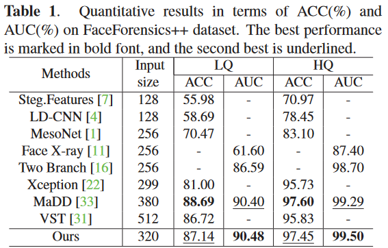
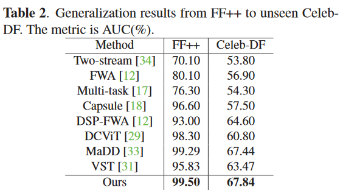
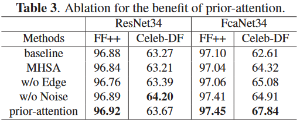
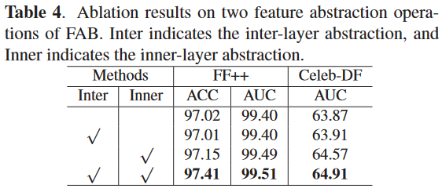

1. Introduction
如下图所示，真实图像的边缘图保留了丰富的纹理信息，在伪造图像的边缘途中丢失了一些细节，此外，噪声图展示噪声在真实图像的面部特征和边界上均匀分布，在伪造图像中集中于边界。
本文主要贡献如下：
- 提出prior-attention机制，利用先验信息构建注意力图，引入边缘和噪声信息，有助于突出鉴别性特征；
- 基于prior-attention机制，设计了可嵌入的特征提取模块(Feature Abstraction Block, FAB)来促进层级间交互，以检测微小的伪造痕迹。
- 实验结果表面本文方法有很好的模块化和可解释性，以及出色的准确性。
2. Method
本文的框架如下图所示。基于Transformer的FAB模块被嵌入到骨干网络中，先验注意力模块替换Transformer中的多头注意力机制来增强纹理信息。
2.1 先验注意力模块(Prior-Attention)
使用SRM滤波器提取噪声图，Canny边缘检测器提取边缘图，将这些先验信息来构建注意力图。记第l层CNN的特征图为$f_l\in\mathbb{R}^{H\times W\times C}$。将特征图分成N个patch，得到patch-level特征序列$S=[X_{cls},X_1,\dots,X_N]\in\mathbb{R}^{(N+1)\times D}$。模块细节见下图。由特征序列$S$得到$Q,K,V\in\mathbb{R}^{(N+1)\times(D/h)}$矩阵，h为头数(number of heads)。
应用先验信息时，仅将其添加到ClsToken上，对每个注意力头以相同的方式执行该操作。
$$
AttMap_{cls}=Att_{template}+Att_{cls}
$$
2.2 特征提取模块(Feature Abstraction Block, FAB)
随着网络的深入，特征通道增多，可能造成信息冗余，于是通过$1\times1$卷积和Instance Normalization来实现层内特征压缩提取。然后，将前一层的特征转换成1D的ClsToken，实现层间特征提取。
$$
\text{ClsToken}=Linear(Flatten(MaxPool(f_{l-1})))
$$
$$ \text{PatchTokens}=Reshape(IN(Conv_{1\times1(f_l)})) $$
$$ \text{S}=Concat(\text{ClsToken,PatchTokens}) $$
2.3 特征融合与损失函数
考虑到感受野的多样性，各特征层的patch大小分别设置为4,2,1。为了使不同层的特征交互学习并且节省开销，FAB模块共享权重。最后对齐各层的ClsToken并相加，通过全连接层得到最终的预测概率。损失函数为交叉熵损失函数。
3. 实验
3.1 实现
人脸分辨率为$320\times 320$，不使用数据增强。使用FcaNet34和ResNet34作为骨干网络，将FAB模块插入到主干网络的后三个块中。
3.2 性能比较
-
FF++上的测试结果：
 -
Celeb-DF上的泛化性结果

3.3 消融实验
-
先验注意力模块
 -
FAB模块

3.4 可视化
先验注意力图相较于MHSA提供了更具判别性的线索。